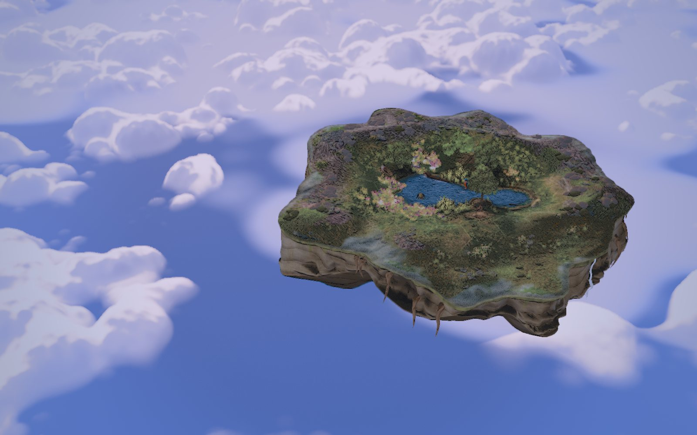

A cosy nature game in the sky
Pocket Reserve
Your own little nature reserve, floating in the sky Plant it tile by tile until frogs, kingfishers and otters move in.
It’s free, with no sign-up. Your island saves in this browser as you play.
How to play
- PlantYou start on almost bare rock with eight seeds and a hand of cards: meadow, flowers, hedge, pond and reeds. Each seed plants one card on one tile.
- InviteYour Wildlife list shows which animals have a home ready. Pick one, then tap the tile it will live on. First up: an earthworm and a bumblebee!
- ConnectChapter by chapter, you join your island up: meadow next to meadow so the wind can’t blow it away, reeds next to water, and trout in the pond so a kingfisher comes to fish.
It’s 2052. Far below the clouds, the Earth is resting and slowly getting better. Up above, the floating islands of the Lumen shelf look after plants and animals until they can go home. You look after Cell 7, the furthest island out: bare rock, just waiting for its first green shoots. Twenty animals are hoping to move in, from earthworms to otters, all from the meadows, wetlands and woods of Europe’s rainy north-west.
Every seed can help an animal find a home.
Each chapter gives you a handful of seeds: enough if you plan, but not enough to waste. An animal needs its whole home at once, the ground it lives on plus the cover, water or flowers next to it. A seed in the wrong spot can leave an animal without a home, so think before you plant!
The first chapters are open, and more are on the way. Each one starts with a message from a friend on the Lumen shelf.
The story
Meet the twenty animals
Each one needs a home just like in the wild.
An earthworm only asks for soft ground. A frog wants water with meadow next to it. A kingfisher is fussier: clear water, a branch to watch from, a bank to dig into and fish close by, or it’s off!
Scroll sideways to meet all twenty animals.
Play right here in your browser.
Nothing to download! From your first tap you’ll hear the wind, splashing water, a little music and every animal as it moves in. The Sound button turns it all off.
Go to the island